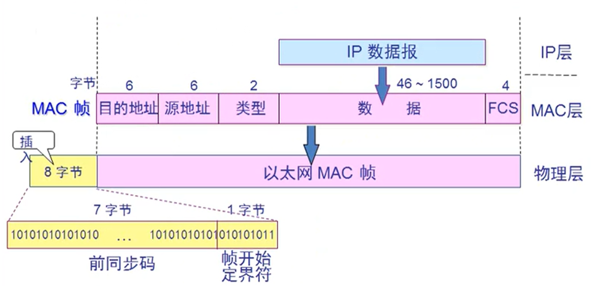
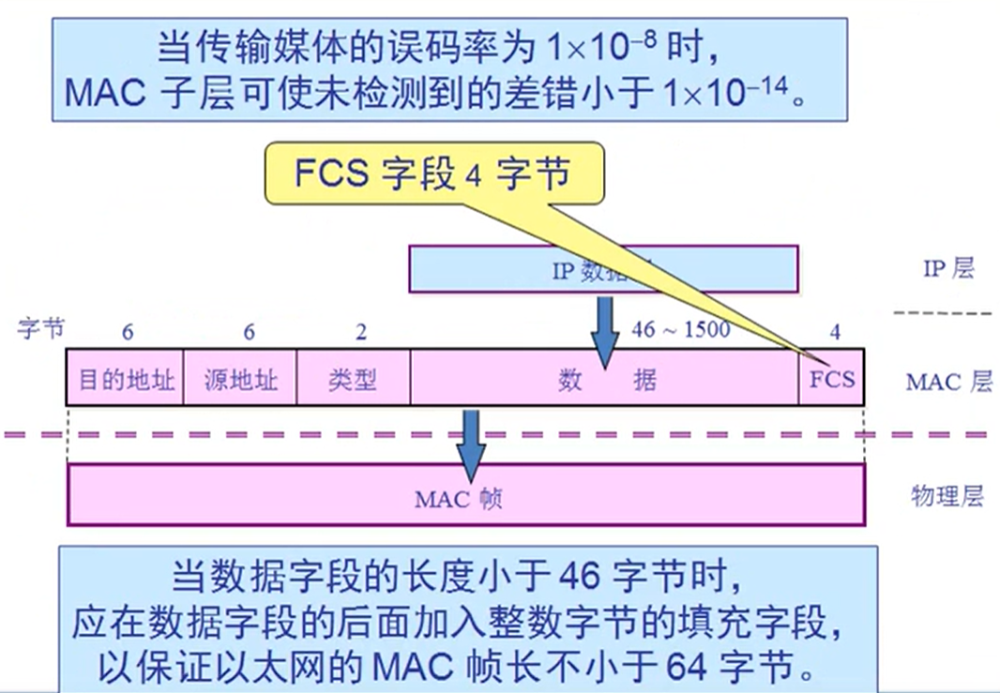
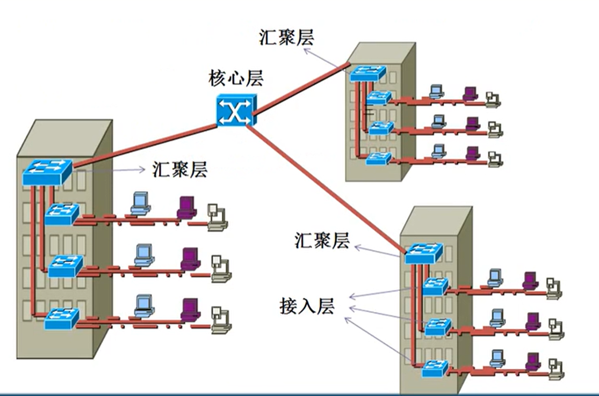

Mac层与快速以太网 @
Mac 层的硬件地址 @
- 在局域网中，硬件地址又称为物理地址，或 Mac 地址.
- 802 标准所说的地址严格的讲应当是每一个站的名字或标识符. 但鉴于大家都已经习惯了将这种 48 位的名字称为地址，所以就采用了这种习惯用法。
- IEEE 的注册管理机构 RA 负责向厂家分配地址字段的前三个字节(即高位 24 位),地址字段中的后三个字节(即低位 24 位)由厂家自行指派，称为扩展标识符，必须保证生产出的适配器没有重复地址.
- 一个地址块可以生成 2 的 24 次方个不同的地址，这种 48 位地址称为 Mac-48，它的通用名称是 EUI-48.
- Mac 地址实际上就是适配器地址或适配器标识符 EUI-48.
适配器检查 Mac 地址 @
- 适配器从网络上每收到一个 Mac 帧就首先用硬件检查 Mac 帧中的 Mac 地址
- 如果是发送本站的帧则收下，然后在进行其他的处理
- 否则就将此帧丢弃，不再进行其他的处理
发送本站的帧，包括以下三种:
- 单播帧 （一对一）
- 广播帧 （一对全体）
- 多播帧 （一对多）
Mac 帧格式 @
一般格式 @

前 8 个字节作用是实现比特同步，第一个字段共七个字节，称为前同步码，作用是实现快速 Mac 帧的比特同步。
以太网 V2 的 Mac 帧格式 @

无效的 Mac 帧 @
- 帧的长度不是整数个字节
- 用收到的帧检验序列 FCS 查出有差错
- 数据字段的长度不在 46-1500 字节之间
- 有效的 Mac 帧长度为 64-1518 字节之间
- 对于检查出的无效 Mac 帧就简单地丢弃。以太网不负责重传丢弃地帧。
帧间最小间隔 @
帧间最小间隔为 9.6us，相当于 96bit 地的发送时间,一个站在检测到总线开始空闲后，还要等待 9.6us 才能再次发送数据。
这样做是为了使刚刚收到数据帧的站的接收缓存来得及清理，做好接收下一帧的准备。
扩展以太网 @
在物理层考虑扩展 @
距离扩展： 主机使用光纤和一对光纤调制解调器连接到集线器 数量扩展： 集线器级联：使网络中计算机增加，变成一个大的冲突域，会造成效率降低
用集线器扩展局域网优点 @
- 使原来属于不同碰撞域的局域网上的计算机能够进行跨碰撞域的通信
- 扩大了局域网覆盖的地理范围
- 用集线器扩展局域网缺点
- 碰撞域增大了，但总的吞吐量并未提高
- 如果不同的碰撞域使用不同的数据率，那么就不能用集线器将他们互连起来
在数据链路层考虑扩展 @
在数据链路层扩展局域网使用网桥
- 网桥工作在数据链路层，它根据 Mac 帧的目的地址对收到的帧进行转发。
- 网桥具有过滤帧的功能和学习功能。当网桥收到一个帧时，并不是向所有的接口转发此帧，而是先检查此帧的目的 Mac 地址，然后再确定将该帧转发到哪一个接口
优点：过滤通信量，扩大物理范围，提高可靠性，可互连不同物理层，不同 Mac 子层和不同速率。
缺点：存储转发增加了时延，在 Mac 子层并没有流量控制功能。具有不同 Mac 子层的网段桥接在一起时延更大，网桥只适合用户不太多和通信量不太大的局域网，否则有时还会因传播过多的广播信息导致网络拥塞。
网桥自学习算法 @
按照以下子学习算法处理收到的帧和建立转发表。
- 若从 A 发出的帧从接口 x 进入到了某网桥，那么从这个接口出发沿相反方向一定可把一个帧传送到 A。
- 网桥每收到一个帧，就记下其源地址和进入网桥的接口，作为转发表中的一个项目。
- 在建立转发表时是把帧首部中的源地址写在“地址”这一栏的下面。
- 在转发帧时，则是根据收到的帧首部中的目的地址来转发的，这时就把在“地址”栏下面已经记下的源地址当作目的地址，而把记下的进入接口当作转发接口。
ps：网桥是交换机的前身，透明网桥：指局域网上的站点不知道所发送的帧将经过几个网桥，因为网桥对于各站点是看不见的，透明网桥使用生成树算法避免产生转发的帧在网络中成环。
生成树算法 @
互联在一起的网桥在进行彼此通信后，就能找出原来的网络拓扑的一个子集。在这个子集中，整个连通的网络中不存在回路，即在任何两个站之间只有一条路径。
为了避免产生转发的帧在网络中不停兜圈子。
为了得出能够反应网络拓扑发生变化时的生成树，在生成树上的根网桥每隔一段时间还要对生成树的拓扑进行更新。
交换机 @
随着网桥接口的增加，后来网桥和集线器合并了，计算机可以直接和交换机连接，这就是交换机。交换机就是网桥和集线器的合并版，能全双工，安全通信。
- 端口带宽独享
- 安全
- 基于 Mac 地址转发
- 通过学习构建 Mac 地址表
快速以太网 @
100BASE-T 以太网 @
速率达到或超过 100Mb/s 的以太网称为高速以太网。
在双绞线上传送 100Mb/s 基带信号的星型拓扑以太网，仍使用 IEEE802.3 的 CSMA/CD 协议。
100BASE-T 以太网又称为快速以太网(Fast Ethernet)。
100Base-T 以太网的物理层： @
- 100BASE-TX ： 使用 2 对 UTP5 类线或屏蔽双绞线 STP
- 100BASE-FX : 使用 2 对光纤
- 100BASE-T4 : 使用 4 对 UTP3 类线或 5 类线
100Base-T 特点 @
- 可在全双工方式下工作而无冲突发生，因此，不使用 CSMA/CD 协议。Mac 帧格式仍然是 802.3 标准规定的。
- 保持最短帧长不变，但将一个网段的最大电缆长度减小到 100m，帧间时间间隔从原来的 9.6us 改为现在的 0.96us。
G 比特以太网 @
- 允许在 1GB/s 下全双工和半双工两种方式工作
- 使用 802.3 协议规定的帧格式
- 在半双工方式下使用 CSMA/CD 协议(全双工方式不需要使用 CSMA/CD 协议)
- 与 10BASE-T 和 100BASE-T 技术 向后兼容
- 当 G 比特以太网工作 在全双工方式时,不使用载波延伸和分组突发
G 比特以太网的物理层 @
1000BASE-x 基于光纤通道的物理层： @
- 1000BASE-SX SX 表示短波长 传输距离 275 或 550 米
- 1000BASE-LX LX 表示长波长 550 米或 5000 米
- 1000BASE-CX CX 表示铜线 传输距离 25 米
1000BASE-T： @
- 使用四对 5 类线 UTP
G 比特以太网配置举例 @

10G 比特以太网 @
- 同 10Mb/s，100Mb/s，1Gb/s 以太网的帧格式完全相同
- 保留了 802.3 标准规定的以太网最小和最大帧长，便于升级
- 不再使用铜线而只使用光纤作为传输媒体
- 只工作在全双工方式，因此没有争用问题，也不使用 CSMA/CD 协议。
端到端的以太网传输 @
10G 比特以太网的出现，以太网的工作范围已经从局域网扩大到城域网和广域网，从而实现了端到端的以太网传输 。
这种工作方式的好处是：
- 成熟的技术
- 互操作性很好
- 在广域网中使用以太网时价格便宜
- 统一的帧格式简化了操作和管理
Cisco 建网 3 层模型 @
